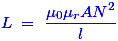
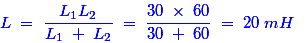

- Which of following is the unit of inductance?
A Henry (H) is the derived SI unit of inductance. Henry is referred to the inductance of a circuit, in which changing of current with the rate of one ampere per second creates electromotive force of one volt. Then, we can write the Henry as milli - henry, micro - henry, nano - henry, pico- henry, etc.
- The core of coil length is 200 mm. The inductance of coil is 6 mH. If the core length is doubled, all other quantities, remaining the same, the inductance will be
The expression of inductance is given by,

From this expression, we came to know that the inductance inversely proportional to length of the core. Hence, if length gets increased by two, then the same factor of inductance would be decreased. So, the inductance value decreases from 6 mH to 3mH due to the increases of core length. - The core of a transformer for microwave frequency should be made of
Microwave frequency range is in terms of 500 KHz. So, there would be a chance to create more hysteresis losses and eddy current losses due to its high frequency (because frequency is directly proportional to both two losses). So, we need to choose a high permeability material to minimize the hysteresis losses. Hence, the laminated ferrite core is best material to for microwave frequency in order to reduce those losses because this material has high permeability in nature.
- A ferrite core has low eddy current loss than an iron core because
We know that the high resistance cannot allow the current to flow through the circuit. Due to the high permeability property of ferrite core, it should be having high reluctance. This is reluctance is electrical analogous to resistance. Hence, the formation of eddy current losses in the core is reduced due to the high resistance of the ferrite soft iron core.
- For dc voltage an inductor is virtually a
In DC supply, the current and voltage are constant. If we apply DC supply across an inductor, then there is no change voltage and the current gradually increases, due to which the steady state voltage across the inductor is zero. Hence, it virtually acts as a short circuit.
- For an inductor, electric current is proportional to
Each electron can move in a conductor that creates its own magnetic field. As electrons move through the coil of wire, the magnetic field of one electron adds to the field of any others moving in the same direction. Hence, the current should be directly proportional to magnetic field in an inductor.
- Hysteresis loss is proportional to
- In an iron cored coil the iron core is removed so that the coil becomes an air core coil. The inductance of the coil will
When the magnetic field creation from the current carrying coils that goes through the iron core and that would line up with each magnetic field also it adds the total strength of magnetic field. So, if we remove that iron core, the line up action in each magnetic field does not happen. Hence, the inductance of the coil decreases.
- A pure inductor when connected across 220 V, 50 Hz supply consumes 100 W. From the above statement it can be concluded that
The pure inductor does not consume any actual power from source. Hence, the above statement is false.
- Which of following is true for a purely inductive circuit ?
A pure inductor has 90° power angle between voltage and current. Hence, cos90° is zero and thereby the actual power P = VIcos90° is also equal to zero.
- A laminated iron core has reduced eddy current losses because
The lamination on the core are actually insulated from each other. This means that there is no circuit to make the current flow. This is how the eddy current loss is reduced by the lamination of cores is insulated from each other.
- The main purpose of choke is
The choke is nothing but one type of inductor. The main purpose of it is to block high frequencies and pass low frequencies.
- RF inductors are characterized by
Because the RF inductor suffers from the proximity effects. That leads to do some mal function in it. That is why we used to characterize them by low current rating and high resistance. It could not be allowed the RF inductor to suffer them from proximity effects.
- Ferrites are a sub-group of
Ferrites are a subgroup of ferromagnetic materials. For example, from the following some ferromagnetic materials such as iron, nickel, cobalt, iron alloys, nickel alloys, cobalt alloys, perm alloy, and several steels, the ferromagnetic materials such as magnetite, nickel-zinc ferrite, manganese-zinc ferrite, and copper-zinc ferrite are developed.
- A crack in the magnetic path of an inductor will result in
A crack in the magnetic path of an inductor leads to collapse in the strength of magnetic field. If it looses the strength of its magnetic field, then obviously there could be a chance to reduction of its inductance.
- A ferromagnetic core subjected to cycles of magnetisation will exhibit hysteresis when the cycle is
If we apply a alternating cycle to the material, it generates alternating magnetic field. That alternating magnetic field would trace out a loop that is called a hysteresis loop. As the frequency of the alternating magnetic field increases, other losses caused by eddy currents and magnetic viscosity are added to hysteresis losses. At high frequencies the area of the hysteresis loop increases correspondingly. Hence, the cycles of magnetization exhibits the hysteresis when the cycle is alternating.
- In order to minimise loss due to hysteresis, the magnetic material should have
The hysteresis coefficient is defined as the ratio of loss of energy per cycle to the field intensity or the intensity of electromagnetic stress in the material. Hence, the low hysteresis coefficient leads to reduce the hysteresis loss in that magnetic material.
- An open coil has
An open coil is nothing but the ideal inductor. The ideal inductor has zero resistance in nature that allows more currents to flow through it. Hence, it creates high magnetic field and thereby the inductance is also high.
- The total inductance of a 30 mH inductance (L1) and a 60 mH inductance (L2) in parallel without mutual coupling will be
For parallel connected inductor, the equivalent inductor is

If the mutual inductance between them is zero, the equivalent inductance would be L / 2 for two self-induced inductors in parallel. Hence, the total inductance is LTOTAL = 20 / 2 = 10 mH. - In above problem, if the inductance L1 and L2 in series aiding with 30 mH mutual inductance , then total inductance will be
For series connected inductor, the equivalent inductor is LSERIES = L1 + L2. So, LSERIES = 30 + 60 = 90 mH. If this combination is connected with one more 30 mH mutual inductance, then the equivalent inductor LEQUIVALENT = LSERIES + (LMUTUAL × 2) = 90 + (2 × 30) = 150 mH.
Design with  by SARU TECH
by SARU TECH
www.sarutech.com
Content Credited to electrical4u.com
Online Electrical Engineering Study Site